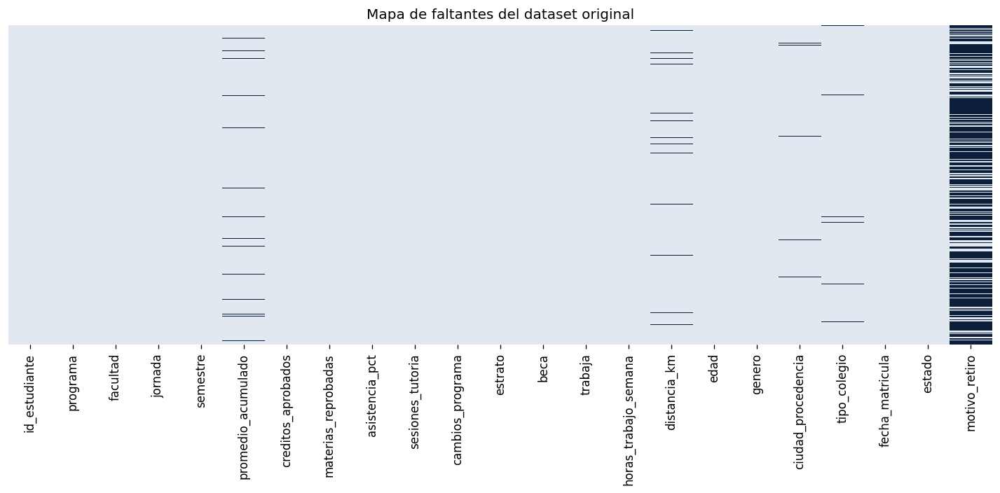
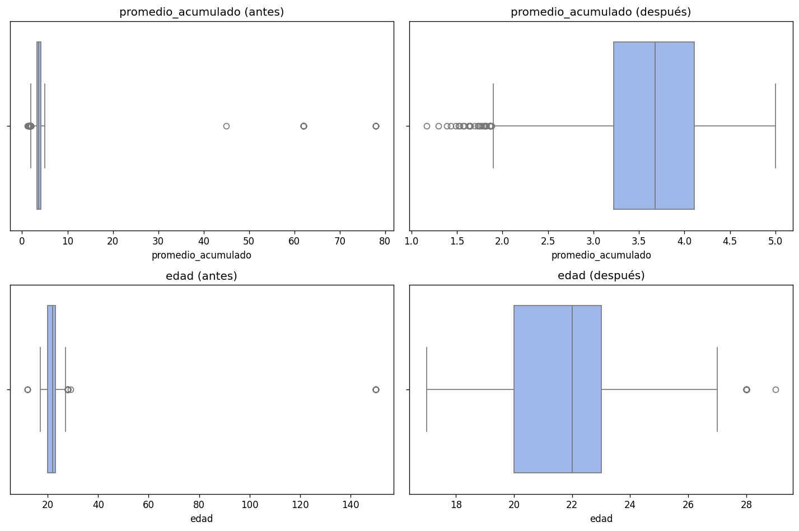
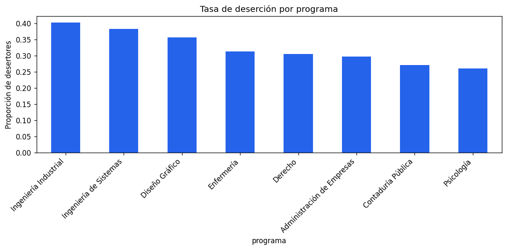
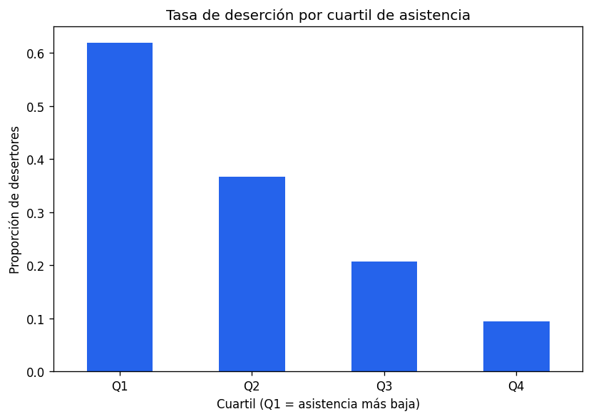

Informe de análisis
Resultados obtenidos sobre el dataset limpio. Cada cifra va acompañada del número de estudiantes del grupo, porque una tasa sin su tamaño no se puede interpretar.
Diagnóstico
Antes de limpiar se revisó el dataset sin modificarlo, para distinguir nulos reales, faltantes disfrazados, valores imposibles, duplicados, errores tipográficos y formatos inconsistentes.


Limpieza
Cada cambio quedó registrado con el número de filas afectadas y su justificación, para que cualquier persona pueda revisar el proceso.
| Paso | Columna | Acción | Filas | Justificación |
|---|---|---|---|---|
| numericos | asistencia_pct | quitar símbolo % | 300 | El % convierte la columna en texto y no deja calcular promedios ni cuartiles. |
| numericos | asistencia_pct | guion a nulo y convertir a número | 202 | El guion significa 'sin dato'; como nulo real pandas lo reconoce y no lo cuenta como valor. |
| numericos | horas_trabajo_semana | guion a nulo y convertir a número | 2.822 | El guion es un faltante disfrazado; se trata en el paso 8 según si el estudiante trabaja. |
| numericos | distancia_km | 999 a nulo | 152 | 999 es un código de 'sin dato'; dejarlo inflaría el promedio de distancia. |
| categorias | programa | strip, lower y diccionario de variantes | 260 | La misma categoría escrita de varias formas se contaría como grupos distintos. |
| categorias | jornada | strip, lower y diccionario de variantes | 485 | La misma categoría escrita de varias formas se contaría como grupos distintos. |
| categorias | genero | strip, lower y diccionario de variantes | 559 | La misma categoría escrita de varias formas se contaría como grupos distintos. |
| categorias | ciudad_procedencia | strip, lower y diccionario de variantes | 542 | La misma categoría escrita de varias formas se contaría como grupos distintos. |
| fechas | fecha_matricula | convertir con dos formatos y unir con fillna | 3.052 | Con un solo formato, las fechas DD/MM/AAAA quedarían vacías. |
| duplicados | todas | eliminar filas repetidas | 150 | Tienen el mismo id_estudiante: contarlas dos veces altera tasas y promedios. |
| faltantes | promedio_acumulado | eliminar filas | 298 | Una nota no se puede inventar; imputarla cambiaría el promedio por jornada. |
| faltantes | ciudad_procedencia | reemplazar por 'Sin dato' | 96 | Eliminar la fila perdería sus demás datos; inventar el dato sería falso. |
| faltantes | tipo_colegio | reemplazar por 'Sin dato' | 145 | Eliminar la fila perdería sus demás datos; inventar el dato sería falso. |
| faltantes | motivo_retiro | dejar los nulos | 0 | Solo aplica a desertores; en activos y graduados el nulo es correcto. |
| imposibles | promedio_acumulado | eliminar promedios mayores a 5 | 15 | Fuera de la escala 0 a 5; convertirlos sería suponer una escala que no conozco. |
| imposibles | edad | fuera de 15 a 60 a mediana (22) | 12 | Son errores de registro; la mediana no se afecta por los extremos. |
| imposibles | horas_trabajo_semana | nulo a 0 si no trabaja | 2.703 | Quien no trabaja tiene 0 horas de trabajo; no es un dato perdido. |
| imposibles | horas_trabajo_semana | mayores a 100 y nulos restantes a mediana de quienes trabajan (24) | 29 | Más de 100 horas no es creíble; la mediana de los que trabajan es el valor típico del grupo. |
| variables | desertor | crear True/False desde estado | 3.136 | El promedio de True/False da directamente la tasa de deserción. |
| variables | cuartil_asistencia | dividir asistencia en 4 grupos con qcut | 9.490 | Grupos de tamaño parecido para comparar la deserción; Q1 es la asistencia más baja. |
Resultados
Respuestas calculadas con groupby() y agg() sobre el dataset limpio.
Tasa de deserción y tamaño de cada programa.
| Programa | Estudiantes | Tasa de deserción |
|---|---|---|
| Ingeniería Industrial | 1.271 | 40,2 % |
| Ingeniería de Sistemas | 1.386 | 38,2 % |
| Diseño Gráfico | 848 | 35,6 % |
| Enfermería | 1.132 | 31,3 % |
| Derecho | 1.447 | 30,5 % |
| Administración de Empresas | 1.304 | 29,7 % |
| Contaduría Pública | 1.162 | 27,0 % |
| Psicología | 1.137 | 26,0 % |
Ingeniería Industrial presenta la tasa más alta: 40,2 % entre 1.271 estudiantes, frente a una tasa general de 32,4 %.

Comparación de la tasa de deserción según beca.
| Beca | Estudiantes | Tasa de deserción |
|---|---|---|
| no | 7.004 | 36,4 % |
| sí | 2.683 | 21,9 % |
La deserción es menor en el grupo beca = sí, con una diferencia de 14,5 puntos porcentuales. Es una asociación: no prueba que la beca cause la permanencia.
Promedio acumulado en escala de 0 a 5.
| Jornada | Estudiantes | Promedio acumulado |
|---|---|---|
| Nocturna | 2.666 | 3,46 |
| Fin de semana | 949 | 3,70 |
| Diurna | 6.072 | 3,72 |
Nocturna registra el menor promedio acumulado: 3,46.
Se excluyen los graduados porque no pertenecen a ninguno de los dos grupos comparados.
| Estado | Estudiantes | Materias reprobadas (promedio) |
|---|---|---|
| Activo | 5.692 | 0,62 |
| Desertor | 3.136 | 3,07 |
Los desertores reprobaron en promedio 3,07 materias, frente a 0,62 de los activos.
Q1 agrupa la asistencia más baja y Q4 la más alta. Cada cuartil tiene un tamaño parecido.
| Cuartil | Asistencia promedio | Estudiantes | Tasa de deserción |
|---|---|---|---|
| Q1 | 73,9 % | 2.385 | 61,9 % |
| Q2 | 84,4 % | 2.386 | 36,7 % |
| Q3 | 91,3 % | 2.348 | 20,7 % |
| Q4 | 98,7 % | 2.371 | 9,4 % |
La deserción aumenta cuando baja la asistencia: 61,9 % en Q1 frente a 9,4 % en Q4. El patrón muestra asociación, no causa.

Alcance
Tres límites que deben tenerse en cuenta antes de tomar decisiones con estos resultados.
Reflexión 1
Que los becados deserten menos no prueba que la beca los retenga. Las becas suelen darse a estudiantes con buen rendimiento, que ya tenían menos riesgo. Para hablar de causa habría que comparar grupos iguales en todo, excepto en la beca.
Reflexión 2
Solo se conoce después de que el estudiante deserta. Usarlo en un modelo sería predecir con información del futuro, que nunca estaría disponible a tiempo.
Reflexión 3
Género, estrato y ciudad pueden reflejar desigualdades sociales. Las alertas deben basarse en señales académicas, como la asistencia, y estas variables usarse solo para vigilar que el apoyo sea justo.